Gasleidingen
Aanleg en vervanging van distributie- en dienstleidingen volgens strikte veiligheidsnormen.
Meer informatie →Wij realiseren duurzame en betrouwbare ondergrondse infrastructuur voor de toekomst
ONZE EXPERTISES
Prestige Infratechniek staat voor kwaliteit en vakmanschap binnen de ondergrondse infrastructuur. Met meer dan 10 jaar ervaring worden zowel kleinschalige als grootschalige projecten door heel Nederland gerealiseerd.
Door het inzetten van modern materieel, hoogwaardige materialen en vakbekwame specialisten worden projecten volledig turn-key en in eigen beheer uitgevoerd. Efficientie, veiligheid en betrouwbaarheid vormen daarbij de basis.

Aanleg en vervanging van distributie- en dienstleidingen volgens strikte veiligheidsnormen.
Meer informatie →Complete aanleg en vervanging van waterleidingen in bestaande en nieuwe infrastructuren.
Meer informatie →
Werkzaamheden aan laag- en middenspanningskabels met focus op veiligheid en precisie.
Meer informatie →Turn-key uitvoering van sleuf, voorbereiding en herstel van bestrating binnen een traject.
Meer informatie →
Essentiele voorbereiding voor betrouwbare ramingen, calculaties en projectplanning.
Meer informatie →Veilig werken in risicovolle omgevingen, met focus op gezondheid, veiligheid en milieu
Persoonlijke certificering van operationeel leidinggevenden op het gebied van veiligheid
Vakbekwaamheid voor aanleg en onderhoud van drinkwaterleidingen
Gecertificeerd voor veilig uitvoeren van elektrische installaties en werkzaamheden aan laag- en middenspanningskabels
Veiligheidsinstructies en examen gericht op gas
Bedrijfshulpverlening - eerste hulp, brandbestrijding en evacuatie op de werkvloer
Veilig werken langs de weg - afzetting en beveiliging van werkzaamheden op of naast rijbanen
WIE WIJ ZIJN
Prestige Infratechniek BV is een gecertificeerde en betrouwbare aannemer met meer dan tien jaar ervaring in gas-, water- en elektriciteitsinfrastructuur in heel Nederland. Wij realiseren projecten van klein tot groot - van kleinschalige aansluitingen tot complete netvervangingen en turn-key infra-oplossingen - altijd met vakmanschap, veiligheid en professionaliteit.
Veilig werken staat bij ons voorop.
Wij leveren vakwerk waarop u kunt bouwen.